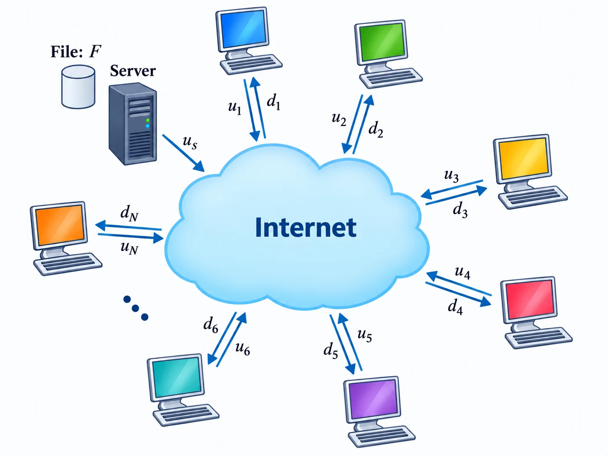
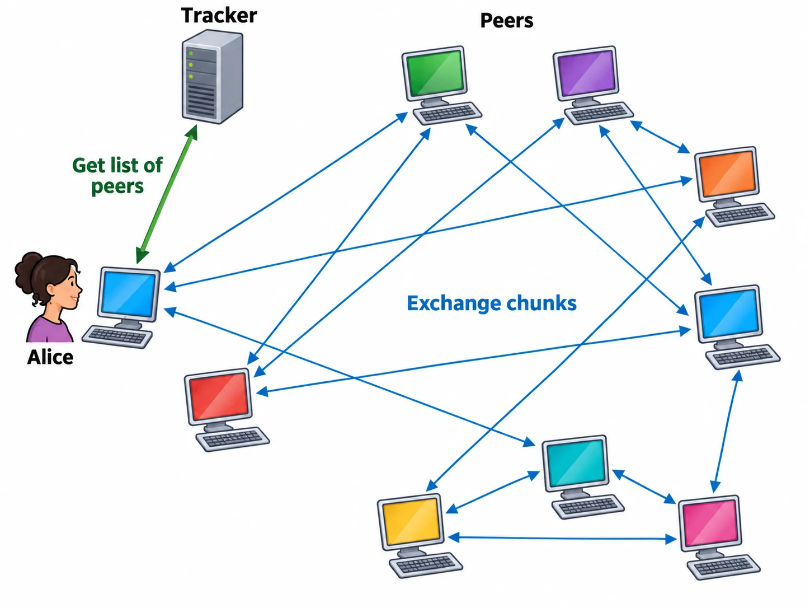

Internet Overview
Components

- End systems (hosts) run network applications, such as computers, phones, and servers.
- Communication links carry bits. Their key metric is the transmission rate $R$, measured in bits per second (bps).
- Packet switches, including routers and link-layer switches, forward packets.
- Internet Service Providers (ISPs) operate networks of links and switching equipment that provide Internet access. Independently operated ISPs interconnect to form a "network of networks."
A protocol defines:
- The types of messages exchanged;
- The syntax and meaning of message fields;
- When messages are sent;
- The actions taken when a message is received or another event occurs.
Internet protocols are primarily standardized by the Internet Engineering Task Force (IETF) and published as Request for Comments (RFCs). Transmission Control Protocol (TCP) and Internet Protocol (IP) are two of the best-known protocols, so the collection of Internet protocols is commonly called the TCP/IP protocol suite.
Two Views of the Internet
- Structural view: The Internet is a network of networks that communicate using the TCP/IP protocol suite.
- Service view: The Internet is an infrastructure that provides communication services to distributed applications. Applications normally access these services through the socket API.
The Internet has no single central management authority. Instead, standards organizations, regional Internet registries, ISPs, and other parties coordinate its operation.
Network Edge and Access Networks
An access network connects an end system to its edge router.
Residential Access: Digital Subscriber Line (DSL)

DSL is commonly provided by telephone companies over existing copper telephone lines:
- A DSL modem modulates and demodulates data signals.
- A splitter separates voice and data signals at the customer premises.
- A DSLAM aggregates multiple DSL lines at the provider side.
DSL is typically asymmetric: downstream rates are higher than upstream rates. Actual performance depends on the DSL technology, line length, and line quality.
Residential Access: Cable Networks and HFC


HFC (Hybrid Fiber Coax) combines a fiber backbone with coaxial cable at the network edge. Its main components include cable modems, splitters, and a Cable Modem Termination System (CMTS).
Households on the same access segment share bandwidth, so actual performance depends on the number of active users and their traffic.
Residential Access: Fiber to the Home (FTTH)
Fiber runs directly to the residence, providing high capacity and low signal attenuation. A Passive Optical Network (PON) commonly shares provider-side fiber infrastructure among several customers.
Enterprise and Campus Access: Ethernet

- Ethernet switches and links form the local area network.
- Common link rates include 100 Mbps, 1 Gbps, 10 Gbps, and higher.
- End systems connect through switches and reach external networks through a router.
Wireless Access
- Wi-Fi (wireless LAN): End systems connect to a wired network through an access point (AP). Its range is usually tens of meters, and multiple devices share the wireless channel.
- Cellular network: End systems connect through an operator's base stations. Cellular networks cover larger areas and support mobility management.
A link's advertised rate is not the same as application throughput. Protocol overhead, signal quality, contention, congestion, and server performance all affect the observed rate.
Network Core
Forwarding and Routing

- Forwarding is a data-plane function. A router uses its forwarding table to move a packet from an input port to the appropriate output port.
- Routing is a control-plane function. Routing algorithms and protocols compute paths and use them to build and update forwarding tables.
Routing is like planning a route; forwarding is like choosing the correct exit at each intersection.
Circuit Switching and Packet Switching
| Property | Circuit switching | Packet switching |
|---|---|---|
| Resources | Reserved end to end | Shared on demand |
| Typical use | Traditional telephone networks | The Internet |
| Advantage | Predictable performance | High utilization; efficient for bursty traffic |
| Cost | Reserved resources are wasted when idle | Queuing, loss, and jitter may occur |

Circuit switching establishes a dedicated end-to-end connection before data transfer. The network reserves transmission resources on every link along the path, rather than reserving an entire cable. In the illustrated example, if each link divides its capacity equally among four circuits, each circuit receives one quarter of that link's transmission rate.
Packet switching divides an application message into packets. Routers usually use store-and-forward transmission: a router receives a complete packet before sending it over the next link.
Let each packet contain $L$ bits and let the link transmission rate be $R$ bit/s:
- The transmission delay of one packet is $\frac{L}{R}$.
- If a path contains $N$ links, all with rate $R$, one packet takes $\frac{NL}{R}$ end to end when propagation, processing, and queuing delays are ignored.
- Sending $P$ equal-sized packets over the path with pipelining takes:
$$ \boxed{\frac{(N+P-1)L}{R}} $$
Network of Networks
The Internet interconnects many autonomous systems (ASs). An AS is a network or group of networks under one administrative authority with a common routing policy. Many ISPs operate ASs, but an AS can also belong to an enterprise or another organization.
If two ASs need to exchange traffic, the traffic may have to pass through an upstream transit provider. This can make the path longer, and the ASs may pay transit fees.
An Internet Exchange Point (IXP) lets multiple ASs connect to a shared switching platform and establish peering arrangements. Direct peering can shorten paths and reduce reliance on paid transit.

Delay, Packet Loss, and Throughput
The total delay at one network node is:
$$ \boxed{d_{nodal}=d_{proc}+d_{queue}+d_{trans}+d_{prop}} $$
- Processing delay $d_{proc}$: Time to inspect the header, check for errors, and determine the output port.
- Queuing delay $d_{queue}$: Time spent waiting in the output buffer; it varies with traffic load.
- Transmission delay $d_{trans}=L/R$: Time required to push all packet bits onto the link.
- Propagation delay $d_{prop}=d/s$: Link distance $d$ divided by propagation speed $s$.
If a buffer is full, newly arriving packets are discarded, causing packet loss.
If the average arrival rate is $a$ packets/s, the traffic intensity is:
$$ \rho=\frac{La}{R} $$
- When $\rho$ is close to 0, queuing is usually minimal.
- As $\rho$ approaches 1, average queuing delay grows rapidly.
- If $\rho>1$ for a sustained period, traffic arrives faster than the link can serve it, so the queue is unstable.
End-to-end throughput is limited by the bottleneck link. In the scenario below, the throughput per connection is:
$$ \min\left\{R_s,R_c,\frac{R}{N}\right\} $$

Layering and Encapsulation

| Layer | Main Function | Protocol or medium |
|---|---|---|
| Application Layer | Provides network services to applications | HTTP, DNS, SMTP |
| Transport Layer | Handles process-to-process data transfer | TCP, UDP |
| Network Layer | Handles addressing and routing across networks | IP |
| Link Layer | Handles transmission over a single link | Ethernet, Wi-Fi |
| Physical Layer | Transmits the raw bits (0s and 1s) | Copper cable, optical fiber, radio |
Each layer provides services to the layer above it. As data moves down the stack, each layer adds its own header to the data received from above; the link layer may also add a trailer. This process is called encapsulation.
For example, data sent over TCP/IP and Ethernet is encapsulated as follows:
Application data
↓
[TCP header | application data] TCP segment
↓
[IP header | TCP header | application data] IP packet
↓
[Ethernet header | IP header | TCP header | application data | Ethernet trailer] Ethernet frame
↓
010101010101...Application Layer
Application Architectures
Client–Server

- Servers are generally always on and have stable addresses.
- Clients send requests to servers and do not communicate directly with one another.
- Large services commonly use data centers and load balancing to scale.
- Examples: search engines, social networks.
Peer-to-Peer (P2P)

- Peers communicate directly with one another.
- Each peer can both request and provide resources.
- Each new peer brings additional service capacity as well as new demand, giving the architecture self-scalability.
- Frequent peer churn, changing addresses, and security management increase complexity.
- Examples: BitTorrent, early Skype, PPLive.
Processes, Sockets, and Addressing
The entities that communicate across a network are processes. Processes on different hosts communicate by exchanging messages. A process can be thought of as a program running on a host.
A socket is the software interface between the application layer and the transport layer; it identifies the process to which arriving data should be delivered. It is the API through which an application uses network services. Delivering data to a specific process normally requires:
- An IP address to identify the host or network interface;
- A port number to identify the destination application process;
- A transport protocol, such as TCP or UDP.
Transport Services Required by Applications
- Reliability: Whether loss, duplication, or reordering can be tolerated.
- Throughput: Whether a minimum delivery rate is required.
- Delay and jitter: Whether data must arrive promptly and at a stable rate.
- Security: Whether confidentiality, integrity, and authentication are required.
The Internet provides two transport services, implemented by TCP and UDP. TCP establishes a connection before transferring data and provides a reliable, ordered byte stream. UDP sends data without first establishing a connection, and it does not guarantee that packets arrive, arrive in order, or arrive only once. The differences between them are as follows:
| Protocol | Connection | Reliability and ordering | Flow/congestion control | Data abstraction | Typical uses |
|---|---|---|---|---|---|
| TCP | Connection-oriented | Reliable, ordered, duplicate-free | Provided | Byte stream | HTTP/1.1–2, files, email |
| UDP | Connectionless | Best effort; packets may be lost or reordered | Not provided by UDP | Datagrams | DNS, QUIC/HTTP/3, real-time media, games |
Web and HTTP
Core Concepts
- Hypertext Markup Language (HTML) describes the structure and meaning of webpage content; CSS typically controls its presentation.
- A web page consists of a base HTML document and objects such as images, CSS, JavaScript, and video.
- Each object can be addressed by a Uniform Resource Locator (URL). For example:
$$ \underbrace{\texttt{http://}}_{\text{scheme}} \underbrace{\texttt{www.someschool.edu}}_{\text{host name}} \underbrace{\texttt{/someDept/pic.gif}}_{\text{path name}} $$
- The default port for
http://is 80; the default port forhttps://is 443. - HyperText Transfer Protocol (HTTP) defines the format and processing rules for requests and responses exchanged between clients and servers.
- HTTP/1.1 and HTTP/2 run over TCP; HTTP/3 runs over QUIC.
- HTTP is a stateless protocol: the protocol itself does not require a server to remember a client's previous requests.
Connections and Response Time
Round-Trip Time (RTT) is the time required for a small packet to travel from a client to a server and back. It includes propagation, queuing, and processing delays.

In the simplified model of non-persistent HTTP over a new TCP connection, retrieving one object takes approximately:
$$ 2RTT + \text{object transmission time} $$
Under this simplified model, fetching 100 objects sequentially with non-persistent HTTP takes about $200RTT$ plus object transmission time: each object needs one RTT to establish a TCP connection and another RTT for the request and initial response. A persistent HTTP connection can be reused for subsequent requests to the same server, avoiding a new TCP handshake for each object. Parallel connections and multiplexing also affect the total elapsed time.
Actual performance also depends on DNS lookups, the TLS handshake, connection reuse, and congestion control.
- HTTP/1.1 supports persistent connections by default. Browsers may also open several parallel TCP connections.
- HTTP/2 multiplexes streams over one TCP connection and interleaves data as frames. It can still suffer from head-of-line blocking at the TCP layer.
- HTTP/3 runs over QUIC. A lost packet affecting one stream does not block delivery on unrelated streams.
HTTP Messages
Example request:
GET /somedir/page.html HTTP/1.1
Host: www.someschool.edu
Connection: close
User-Agent: Mozilla/5.0
Accept-language: frThe first line is the request line: method, request target, and HTTP version. Common methods include GET, HEAD, POST, PUT, PATCH, and DELETE. Header fields follow. An empty line separates the headers from an optional message body; a POST request may have an empty body.
Example response:
HTTP/1.1 200 OK
Connection: close
Date: Tue, 18 Aug 2015 15:44:04 GMT
Server: Apache/2.2.3 (CentOS)
Content-Type: text/html; charset=utf-8
<html>...</html>A response consists of a status line, header lines, and a message body. The status line contains the HTTP version, a status code, and a short status phrase.
Common status-code classes:
2xx: Success, such as200 OK.3xx: Redirection or cache-related responses, such as301 Moved Permanentlyand304 Not Modified.4xx: Client errors, such as400 Bad Requestand404 Not Found.5xx: Server errors, such as500 Internal Server Error.
Cookies
Cookies allow applications to maintain session state over stateless HTTP:
- The server sends a
Set-Cookieheader in a response. - The browser stores the cookie.
- Later requests that match the domain, path, and security rules include a
Cookieheader. - The server associates the cookie with a session or user preferences.
The following figure shows an example: 
Sensitive cookies should normally use Secure, HttpOnly, and an appropriate SameSite policy.
Web Caching and Conditional Requests
A web cache, or proxy cache, stores copies of recently requested objects:
- It acts as a server when responding to a browser.
- It acts as a client when retrieving content from the origin server.
- It can reduce response time for client requests, origin-server load, and traffic on institutional access links.
The following figure shows how web caching works: 
Web caches are typically installed by ISPs, and caches operated by different ISPs may form a multi-level hierarchy.
Cached content can become stale. A client or cache can send a conditional request using If-Modified-Since or If-None-Match. If the content is unchanged, the server returns 304 Not Modified without retransmitting the complete object.
File Transfer Protocol (FTP)
FTP uses separate TCP connections for control and data. The server normally listens on port 21 for the control connection, which carries commands and replies across a session. In default active mode, the server initiates a data connection from port 20 to a client port. In passive mode, the server listens on a negotiated data port instead. Data connections carry file contents or directory listings; a new data connection is typically opened for each transfer, although the protocol permits reuse in some cases.

Keeping control and data on separate connections allows commands and replies to continue while data is transferred. Opening a new data connection for each transfer adds connection setup overhead.
Protocols involved:
- Transport-layer protocol: TCP
- Application-layer mail transfer protocol: SMTP (port 25)
- Email access protocols: POP3 (port 110), IMAP (port 143), HTTP (port 80)
SMTP stands for Simple Mail Transfer Protocol. IMAP stands for Internet Message Access Protocol.
The main components of an Internet email system are:
- A user agent (UA) for composing, reading, and managing email.
- A mail server that maintains mailboxes and outgoing queues.
- SMTP for submitting mail and transferring it between mail servers.
- IMAP or HTTP for retrieving and managing messages on the server.

A typical delivery path is:
Sender UA → Sender mail server → Receiver mail server → Receiver mailbox/UA
SMTP submission SMTP relay IMAP/HTTP accessAn SMTP session proceeds as follows:
- Establish a connection
S: 220 hamburger.edu- The client introduces itself
C: HELO crepes.fr
S: 250 Hello crepes.fr, pleased to meet you- Specify the sender
C: MAIL FROM: <alice@crepes.fr>
S: 250 alice@crepes.fr ... Sender ok- Specify the recipient
C: RCPT TO: <bob@hamburger.edu>
S: 250 bob@hamburger.edu ... Recipient ok- Begin sending the message content
C: DATA
S: 354 Enter mail, end with "." on a line by itself- Send the message headers and body, ending with a line containing only
.
C: From: alice@crepes.fr
C: To: bob@hamburger.edu
C: Subject: Hello
C:
C: Do you like ketchup?
C: How about pickles?
C: .
S: 250 Message accepted for delivery- End the SMTP session
C: QUIT
S: 221 hamburger.edu closing connectionIf the receiving server is temporarily unavailable, the sending server keeps the message in a queue and retries later.
Because the recipient's client is not always online, the mail server cannot be expected to open an SMTP connection to the client as soon as an email arrives. Moreover, SMTP is a "push" protocol, whereas message retrieval is a "pull" operation. The client therefore uses a separate protocol to retrieve mail; IMAP is a common choice.
Domain Name System (DNS)
Purpose and Properties
The Domain Name System (DNS) primarily maps hostnames to IP addresses. It is both a distributed database implemented by a hierarchy of DNS servers and an application-layer protocol.
DNS uses port 53. Ordinary queries commonly use UDP because they are latency-sensitive and the messages are usually short. DNS falls back to TCP when a response is too large for UDP (the response is truncated), and it uses TCP for zone transfers.
Resolution Process
Conceptually, the Internet is divided into more than 1,000 top-level domains (the number grew rapidly after the new gTLD program launched in 2012); each top-level domain can be further subdivided into subdomains, and so on. Hostnames therefore follow a hierarchical naming scheme.

There are 13 root server identities (A through M), operated by 12 organizations. Each identity is replicated as many anycast instances worldwide (well over 1,000 instances in total). The root servers know the IP addresses of all top-level domain servers.

Suppose a client wants the IP address of www.amazon.com:
- The DNS client queries the root server and obtains the address of the DNS server for the
.comdomain. - The DNS client queries the
.comdomain's DNS server and obtains the address of the DNS server for theamazon.comdomain. - The DNS client queries the
amazon.comdomain's DNS server and obtains the IP address of www.amazon.com.
This is called an iterative query.

In practice, the client typically uses recursive queries to communicate with the local DNS resolver, whereas the resolver uses iterative queries to communicate with root, TLD, and authoritative DNS servers. With a recursive query, the client only needs to query the local DNS resolver and wait for the IP address. The following figure illustrates the process.

DNS Caching
To reduce latency and the volume of DNS messages traversing the Internet, DNS makes extensive use of caching. When a DNS server receives a DNS response, it can cache the mapping locally. If a later query for the same hostname reaches that server, the server can answer with the cached IP address. Because the mapping between a hostname and an IP address is not permanent, the DNS server discards cached entries after a set period.
Common Resource Records
A DNS resource record can be represented as (Name, Value, Type, TTL):
| Type | Meaning |
|---|---|
A | Domain name → IPv4 address |
AAAA | Domain name → IPv6 address |
CNAME | Alias → canonical domain name |
NS | Domain → authoritative DNS server |
MX | Domain → mail server |
TXT | Text data, often used for domain validation and email security policies |
DNS queries and responses use the same general message format, with a header and Question, Answer, Authority, and Additional sections.

P2P File Distribution and BitTorrent
In the client-server architecture, let the server's upload rate be $u_s$, and let peer $i$ have upload rate $u_i$ and download rate $d_i$, as shown in the following figure.

Suppose the server wants to distribute one file of $F$ bits to $N$ peers, so that every peer obtains a copy of the same file (not $N$ different files). The server must therefore upload $NF$ bits in total, and the slowest peer, with download rate $d_{min}=\min_i d_i$, needs at least $F/d_{min}$. Then the minimum time is
$$ \boxed{D_{cs}=\max\left\{\frac{NF}{u_s},\frac{F}{d_{min}}\right\}} $$
For large $N$, the distribution time increases linearly with the number of peers $N$.
For the P2P architecture:
- The server must upload at least one copy of the file, taking $\frac{F}{u_s}$.
- Each peer must download a full copy of the file, so the slowest peer needs at least $\frac{F}{d_{min}}$.
- Considering the system as a whole, a total of $NF$ bits must be delivered, and the total upload capacity of the system is at most $u_s+\sum_{i=1}^N u_i$. The distribution time is therefore at least $\frac{NF}{u_s+\sum_{i=1}^N u_i}$.
Combining these bounds:
$$ \boxed{D_{P2P}=\max\left\{\frac{F}{u_s},\frac{F}{d_{min}},\frac{NF}{u_s+\sum_{i=1}^N u_i}\right\}} $$

The minimum distribution time of the P2P architecture is therefore always less than or equal to that of the client-server architecture; equality holds, e.g., when $N=1$ or when all peer upload rates are 0. Moreover, $D_{cs}$ grows linearly with $N$, whereas $D_{P2P}$ grows much more slowly: when peers have nonzero upload rates, it stays bounded as $N$ grows.

The core ideas of BitTorrent are as follows:
- A file is divided into pieces called chunks.
- Peers download different chunks from multiple peers simultaneously while uploading chunks they already have.
- With rarest first, a peer requests the scarcest chunks first, which improves their availability across the swarm.
- The tit-for-tat strategy favors peers that reciprocate by contributing upload bandwidth.
- Trackers or a Distributed Hash Table (DHT) can help peers discover one another.
- The tracker does not take part in transferring file data.
Video Streaming and CDNs
Dynamic, Adaptive Streaming over HTTP (DASH)
Dynamic Adaptive Streaming over HTTP (DASH) encodes a video at several bit rates and divides each version into short segments. The client chooses the quality of the next segment dynamically based on estimated bandwidth and buffer occupancy.
Content Distribution Networks (CDNs)

A Content Distribution Network (CDN) deploys edge servers in many geographic locations, caches content, and directs each user to a suitable server. This can:
- Reduce user-perceived delay;
- Reduce load on the origin and backbone networks;
- Improve availability and scalability.
A CDN may be operated by the content provider or by a third party.
Socket Programming
UDP Sockets
UDP preserves application message boundaries. A typical call sequence is:
Server: socket → bind → recvfrom ↔ sendto
Client: socket → sendto ↔ recvfromTCP Sockets
TCP provides a reliable, ordered, bidirectional byte stream. A typical call sequence is:
Server: socket → bind → listen → accept → recv/send → close
Client: socket → connect ───────────→ send/recv → closeaccept normally returns a new connected socket for each connection, while the listening socket remains available for additional connection requests.
Transport Layer
Transport-Layer Overview
The network layer provides logical host-to-host communication. The transport layer extends this service to provide logical process-to-process communication.
At the sender, the transport layer divides application messages as needed, adds transport headers, and passes the resulting units to the network layer for encapsulation in IP datagrams. The receiver performs the reverse process.
Multiplexing and Demultiplexing
- Multiplexing: The sender gathers data from multiple sockets, adds header information, and passes the segments or datagrams to the network layer.
- Demultiplexing: The receiver examines transport-layer header fields and delivers data to the correct socket.
A port number is 16 bits long and ranges from 0 to 65535. Ports 0–1023 are commonly called well-known ports.
- UDP demultiplexing primarily uses the tuple
(destination IP, destination port). Datagrams from different sources can be delivered to the same destination socket. - A TCP connection is identified by the four-tuple
(source IP, source port, destination IP, destination port). A server can therefore support many simultaneous connections on one listening port.
UDP
UDP adds only basic multiplexing, demultiplexing, and error detection to IP. It is connectionless, has a small header, and does not guarantee delivery or ordering.
UDP Datagram Structure
The UDP header is 8 bytes long:
| Field | Length | Purpose |
|---|---|---|
| Source port | 16 bits | Identifies the sending process; may be zero |
| Destination port | 16 bits | Identifies the receiving process |
| Length | 16 bits | Total length of the header and payload |
| Checksum | 16 bits | Detects bit errors in the header and payload |
The UDP checksum can detect many transmission errors, but it cannot recover lost, reordered, or corrupted data. Applications must implement retransmission, ordering, or other reliability mechanisms when needed.
Principles of Reliable Data Transfer
Common reliability mechanisms include error detection, sequence numbers, acknowledgments, timeout-based retransmission, and pipelining.
Evolution of the rdt Protocols
- rdt1.0: Assumes a completely reliable underlying channel.
- rdt2.0: Handles bit errors with checksums, ACK/NAK feedback, and retransmission, but does not handle corrupted ACK or NAK packets.
- rdt2.1: Adds sequence numbers so duplicate packets can be recognized.
- rdt2.2: Uses numbered ACKs and no longer requires NAKs.
- rdt3.0: Also handles lost data packets and ACKs by adding timers and timeout retransmission. Because its sequence number alternates between 0 and 1, it is also called the alternating-bit protocol.
These are fundamentally stop-and-wait protocols: the sender transmits one packet and waits for an acknowledgment. If ACK transmission time is ignored, sender utilization is approximately:
$$ \boxed{U_{sender}=\frac{L/R}{RTT+L/R}} $$
Stop-and-wait performs poorly when RTT is large, which motivates pipelined protocols.
GBN and SR
| Property | Go-Back-N (GBN) | Selective Repeat (SR) |
|---|---|---|
| Acknowledgment | Cumulative | Individual |
| Receiver behavior | Usually discards out-of-order packets | Buffers out-of-order packets |
| Timers | Usually one timer for the oldest unacknowledged packet | Usually one timer per unacknowledged packet |
| Retransmission | Retransmits all outstanding packets from the missing one onward | Retransmits only packets suspected to be missing |
| Complexity | Lower | Higher, but more efficient on lossy links |
To avoid sequence-number ambiguity in SR, if the sequence-number space has size $K$, the window size should satisfy:
$$ \boxed{N\le \frac{K}{2}} $$
TCP
TCP Connections and Data Transfer
TCP is a full-duplex, point-to-point, connection-oriented protocol that provides a reliable byte stream. Each endpoint maintains its own send and receive buffers.
- Maximum Segment Size (MSS): The maximum amount of application data in a TCP segment.
- Maximum Transmission Unit (MTU): The largest network-layer packet that a link-layer frame can carry.
- Ethernet commonly has a 1500-byte MTU. With IPv4 and TCP headers that contain no options, a typical MSS is 1460 bytes.
Important TCP Header Fields
- Source and destination ports;
- Sequence number;
- Acknowledgment number;
- Header length and flags such as
SYN,ACK,FIN, andRST; - Receive window;
- Checksum;
- Options such as MSS, window scaling, and timestamps.
TCP sequence numbers count bytes. The acknowledgment number indicates the sequence number of the next byte the receiver expects.
RTT Estimation and Timeout
TCP smooths RTT measurements so that the retransmission timeout does not change dramatically after one sample:
$$ EstimatedRTT=(1-\alpha)EstimatedRTT+\alpha SampleRTT $$
$$ DevRTT=(1-\beta)DevRTT+\beta|SampleRTT-EstimatedRTT| $$
$$ \boxed{TimeoutInterval=EstimatedRTT+4DevRTT} $$
Textbook examples commonly use $\alpha=0.125$ and $\beta=0.25$.
Reliable Transfer and Fast Retransmit
TCP uses checksums, sequence numbers, cumulative acknowledgments, timers, and retransmission to provide reliable transfer. After receiving multiple duplicate ACKs, a sender can infer that a segment was probably lost and perform fast retransmit before the timer expires.
Flow Control and Congestion Control
- Flow control protects the receiver. The receiver advertises
rwndso the sender does not overflow its receive buffer. - Congestion control protects the network. The sender uses the congestion window
cwndto regulate how much data it injects into the network.
The sender's effective window is approximately constrained by:
$$ SendWindow\le\min(rwnd,cwnd) $$
Classic TCP congestion control includes:
- Slow start:
cwndgrows approximately exponentially per RTT. - Congestion avoidance: Once
cwndreaches a threshold, it grows approximately linearly. - Fast retransmit and fast recovery: Duplicate ACKs allow a faster response to loss.
- After a congestion signal, the sender reduces its rate, reflecting the Additive Increase, Multiplicative Decrease (AIMD) principle.
Connection Management
A TCP connection is normally established with a three-way handshake:
Client Server
| ------------ SYN=1, seq=x ------------------> |
| <------ SYN=1, ACK=1, seq=y, ack=x+1 -------- |
| --------- ACK=1, seq=x+1, ack=y+1 ----------> |The handshake synchronizes initial sequence numbers and confirms bidirectional communication. During connection termination, each direction normally sends a FIN and receives an ACK, so termination often uses four exchanges. Messages can also be combined, and both endpoints may close simultaneously.
Network Layer (TODO)
Network-Layer Overview
The network layer delivers transport-layer segments from a source host to a destination host. Its core functions include:
- Forwarding: Processing an individual packet according to a forwarding table.
- Routing: Computing paths through the network.
- Logical addressing: Using IPv4 or IPv6 addresses to identify interfaces and network locations.
The IP Service Model
IP provides best-effort service. It does not guarantee:
- Packet delivery;
- In-order delivery;
- An upper bound on delay or a minimum bandwidth;
- The absence of duplicate packets.
Subnets and Forwarding
An IP address contains a network prefix and an interface identifier. Classless Inter-Domain Routing (CIDR) uses /n to represent the prefix length. Routers use longest-prefix matching to select the most specific matching route.
IPv4 private addresses commonly share public addresses through Network Address Translation (NAT). IPv6 provides a much larger address space and a simplified base header.
The Control Plane
- Link-state algorithms: Each router obtains the network topology and computes routes, commonly with Dijkstra's algorithm.
- Distance-vector algorithms: Neighboring routers iteratively exchange distance information using the Bellman–Ford principle.
- OSPF: A common link-state routing protocol within an autonomous system.
- BGP: The inter-domain routing protocol used between autonomous systems; it uses path-vector information and routing policy.
Link Layer and Local Area Networks (TODO)
Link-Layer Overview
The link layer transfers frames between adjacent nodes. Its services can include framing, medium access, error detection, and—in some protocols—reliable delivery.
MAC Addresses and Ethernet
- MAC addresses identify interfaces within a local network.
- An Ethernet switch forwards frames using a self-learned MAC address table.
- If the destination MAC address is unknown, the switch floods the frame through every port except the incoming port.
- Routers separate broadcast domains, while ordinary Layer 2 switches extend a broadcast domain.
- VLANs divide one physical switched network into logical broadcast domains.
ARP
In IPv4 networks, the Address Resolution Protocol (ARP) maps a target IP address to a MAC address on the same link. A host first checks its ARP cache. On a cache miss, it broadcasts an ARP request, and the target normally sends an ARP reply.
Error Detection
- Parity checking: Simple but limited in detection capability.
- Checksums: Interpret data words as integers and combine them arithmetically.
- Cyclic Redundancy Check (CRC): Treats a bit string as a polynomial and performs modulo-2 division using a generator polynomial. CRC is widely used at the link layer.
Wireless Networks (TODO)
Wireless Networking Essentials
Wireless links are affected by path loss, multipath propagation, interference, and the hidden-terminal problem.
Wi-Fi uses CSMA/CA: a device senses the channel before transmitting and performs randomized backoff when the channel is busy. Unlike classic shared Ethernet with CSMA/CD, a wireless sender normally cannot detect collisions reliably while it is transmitting.
Mobile networks must also handle:
- User authentication;
- Mobility and location management;
- Handover between base stations;
- Radio resource allocation and power control.
Network Security (TODO)
Security Goals and Common Attacks
Core security goals include:
- Confidentiality: Only authorized parties can read the information.
- Integrity: Information is not modified without authorization.
- Authentication: The identity of a communicating party can be verified.
- Availability: Legitimate users can obtain the service.
- Non-repudiation: An entity cannot easily deny an action it performed.
Common attacks include:
- DoS/DDoS: Exhausting host, application, or network resources so legitimate users cannot obtain service.
- Sniffing: Capturing traffic from a network link; plaintext protocols are especially vulnerable.
- IP spoofing: Forging the source IP address in a packet.
- Replay attack: Capturing a valid message and transmitting it again to impersonate a user or repeat an operation.
- Man-in-the-middle (MITM) attack: Intercepting communication to observe or modify data exchanged by two parties.
Common defenses include:
- Encrypting communication with TLS, VPNs, or similar mechanisms;
- Using Message Authentication Codes (MACs) or digital signatures to verify integrity and origin;
- Using nonces, timestamps, or sequence numbers to resist replay attacks;
- Applying least privilege, strong authentication, rate limiting, and traffic scrubbing;
- Keeping software updated and monitoring logs for anomalous behavior.
Comments
Questions, corrections, and reading notes are welcome here.
Comments load on the published website.